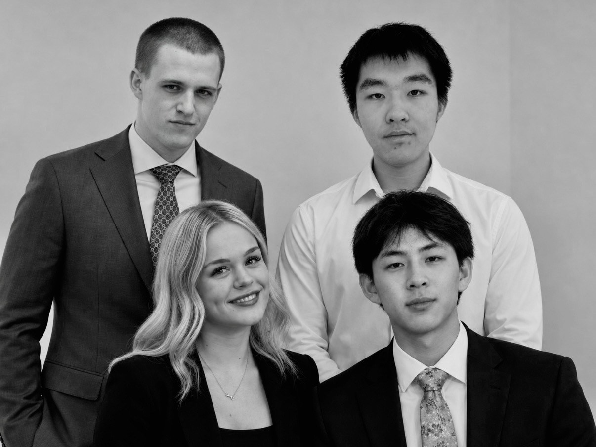

Our team
Who you will be working with.
Four consultants, four biographies, and one account of how we work together, each in our own words.

Consultant 1 of 4
Christine Rideout
Business Strategy & Research Consultant
I believe there's value in understanding not just how things work, but why they work—and how they could work better.
About Christine
Christine Rideout is a Bachelor of Commerce student majoring in Finance at the University of Alberta, with a strong interest in strategic marketing, consumer behaviour, and business growth. She is particularly interested in how market conditions influence customer decisions and how businesses can use research, financial insight, and creative thinking to identify opportunities for growth and improvement. At THAW Strategy Consulting, Christine focuses on understanding the bigger picture, recognizing connections between different business factors, and translating analytical insights into practical strategies that support client objectives.
Christine gained professional experience in Alberta's energy industry at Headwater Exploration, where she worked with financial information and gained exposure to different areas of business operations. Her responsibilities included reviewing financial information, organizing detailed records, and preparing summaries that communicated important findings. These experiences strengthened her ability to interpret complex information, identify relevant details, and present findings clearly and effectively. Working alongside professionals from different departments also demonstrated how communication and informed planning contribute to successful business decisions. Through this experience, Christine developed an appreciation for evaluating opportunities from multiple perspectives rather than focusing on a single solution. She learned the importance of considering financial implications, organizational priorities, and practical limitations before recommending a course of action. She brings this approach to consulting by helping ensure that THAW's recommendations are supported by research, thoughtfully evaluated, and realistic to implement.
Outside her professional experience, Christine has developed leadership and teamwork skills through competitive hockey, including serving as a team captain. In this role, she learned to communicate expectations, support teammates, and maintain a shared focus during challenging situations. Balancing competitive athletics with academic and professional commitments has also strengthened her organization, discipline, and ability to manage competing responsibilities while working toward long-term goals.
At THAW Strategy Consulting, Christine contributes to researching customer behaviour, evaluating market opportunities, and developing recommendations that connect creative marketing concepts with broader business objectives. Her financial background allows her to consider the resources and practical requirements involved in implementing initiatives, while her leadership experience supports collaboration and effective project organization. She approaches each recommendation by considering the relationships between different factors, who the strategy benefits, and how it can address an identified challenge. Her goal is to develop solutions that are not only creative, but also achievable and capable of delivering meaningful results.
For Old Strathcona, Christine will apply these skills to examining customer needs, understanding barriers to visitation, and identifying opportunities to strengthen Whyte Avenue's appeal throughout the year. She will help THAW develop targeted strategies that encourage repeat visits, support local business partnerships, and respond to seasonal changes in customer activity. By combining careful research, strategic thinking, and practical planning, Christine will contribute recommendations that help businesses attract customers, strengthen relationships, and pursue sustainable growth.
Experience
- Energy Industry
- Finance & Business Analysis
- Competitive Athletics
Core Strengths
- Analytical & Strategic Thinking
- Organization & Problem-Solving
- Leadership & Collaboration
Project Role
Contributes research-driven insights, strategic analysis, and practical planning to develop actionable recommendations that support client growth.

Consultant 2 of 4
Austin Grimson
Business Development & Innovation Consultant
I believe the best way to create change is to understand what works, challenge what doesn't, and take action.
About Austin
Austin Grimson is a member of THAW Strategy Consulting who specializes in business development, analytical reasoning, and new technology. He studies market trends and consumer data to show businesses where they can grow over the long term. Austin draws on his experience running a company to help clients read their metrics and find practical ways to put technology to work.
Austin is pursuing a Bachelor of Commerce at the University of Alberta, majoring in Finance. Courses such as Introductory Accounting for Financial Performance taught him to read financial metrics and use them to help businesses push past growth plateaus. His business journey started in high school with Junior Achievement Southern Alberta, where his peers elected him vice president of sales for his organization. He worked closely with the Vice President of Finance and Marketing to find the pitfalls in the organization and align its operating strategies.
Austin has three years of experience in home services as founder, Chief Executive Officer and President of SudBuds Window Cleaning. In the first year after incorporating, he developed an onboarding system that grew the company to seven technicians, eight sales reps, and three executives, a 200% increase in full-time staff. He used company data to pursue strategic investments, with total assets growing sixfold, and revenue by 67% as a result. He developed AI tools to automate backend processes, payroll, online presence and developed sales software that drove a 222% single-month increase in rep-sold revenue. His team of AI agents for search engine optimization raised website form submissions by 156% in a single quarter. An ad campaign he optimized with an AI agent earned a 4.6 return on ad spend, over two points higher than the industry average.
Austin brings team building, lead generation, and technology integration to THAW Strategy. Having managed a client list of over 1200 accounts, he learned how clear communication turns customers into long term partners. Running an operations team that served an average of 22 clients a day taught him the importance of building systems, plan schedules, and prioritizing safety for the client and employee through clear procedures and training. He knows the importance of cultivating experiences and building a positive culture around and within an organization.
Austin grew up playing competitive hockey, which taught him teamwork and discipline. Today he lives one block away from Whyte Ave and has been a customer for two years. He sees what makes the street special, like the nightlife that exceeds any other area of Edmonton. He also sees its problems, like constant fights and violence at night and the quiet streets during winter months. This firsthand view shapes his belief and understanding that Whyte Ave must keep its history and character as it grows.
For OSBA, Austin will use the same approach that grew SudBuds. He will study foot traffic across months, seasons, time of day, and other timeframes to find where Whyte Ave businesses lose customers then provide a detailed approach based on this data to bring them back. As a neighbour and business owner, Austin wants a plan that works for the merchant he supports every week.
Experience
- Business Ownership & Entrepreneurship
- Sales & Operations Management
- AI & Technology Integration
Core Strengths
- Business Development & Growth
- Data-Driven Decision-Making
- Leadership & Innovation
Project Role
Leads business development analysis, evaluates customer trends, and identifies data-driven marketing and technology solutions that could help support sustainable growth.

Consultant 3 of 4
Ethan Wang
Consumer Insights & Engagement Consultant
The way you see the world shapes the opportunities you find, but the choices you make determine what you become.
About Ethan
Ethan Wang is a Marketing student at the University of Alberta with a strong interest in business strategy, consumer behaviour, and financial markets. He is particularly interested in why people make certain decisions, how businesses respond to changing customer needs, and how new technologies create opportunities for growth. At THAW Strategy Consulting, Ethan brings an analytical perspective and an adaptable mindset, focusing on understanding people, recognizing different perspectives, and developing meaningful solutions.
Through his role as a vice coach with U-Top Badminton, Ethan has gained experience in leadership, communication, and coordinating activities with people of different ages and backgrounds. This has taught him the importance of building relationships, listening to others, and recognizing individual strengths. He has learned that effective leadership is not simply about directing others, but about creating an environment where everyone feels supported and can contribute toward a shared goal. These experiences strengthened his appreciation for community involvement and the connections that bring people together. Ethan's soccer background has also shaped his approach to teamwork and decision-making. As a team captain, he learned to communicate clearly, support teammates, and remain focused under pressure. Competing in a team environment taught him that individual talent is most valuable when combined with trust, cooperation, and shared responsibility. Balancing athletics with academic and professional commitments has strengthened his discipline, adaptability, and time management.
Ethan has also gained professional experience in animal conservation at CWCA, where he worked with laboratory results and organized records. These responsibilities strengthened his analytical skills, attention to detail, and ability to work with complex information. Collaborating with professionals from different departments demonstrated how different areas of expertise contribute to informed decisions. This encouraged him to look beyond obvious answers, consider alternative perspectives, and recognize the practical challenges involved in implementing solutions.
At THAW Strategy Consulting, Ethan combines his marketing knowledge, professional experience, and collaborative approach to understanding consumer needs and developing practical recommendations. He is interested in what motivates customers, how businesses build lasting relationships, and why certain experiences encourage people to return. He approaches research with curiosity and an open mind, recognizing that strong strategies require both meaningful insights and an understanding of those they are intended to serve.
For Old Strathcona, Ethan will focus on what attracts visitors to Whyte Avenue, what influences their experiences, and what encourages them to return. He will contribute consumer research and marketing ideas that help local businesses connect with different audiences while preserving the district's character. By combining customer insights, creative thinking, and an appreciation for community relationships, Ethan aims to develop strategies that strengthen engagement, encourage repeat visits, and create lasting value for Old Strathcona.
Experience
- Badminton Coaching & Leadership
- Competitive Soccer Captaincy
- Conservation Research at CWCA
Core Strengths
- Consumer Behaviour & Insights
- Communication & Relationship Building.
- Collaborative & Analytical Thinking
Project Role
Research consumer wants, behaviour, and visitor experiences to identify opportunities for improving customer engagement and revisits.

Consultant 4 of 4
Jiahua Lu
Stakeholder Relations & Business Strategy Consultant
Leadership means Listening first, then helping the group move in the same direction.
About Jiahua
Jiahua Lu is an accounting student at the University of Alberta with a strong interest in financial markets, entrepreneurship, and business growth. He is particularly interested in how economic conditions influence organizational decisions, how businesses respond to changing markets, and how financial information can help identify opportunities and manage risk. At THAW Strategy Consulting, Jiahua brings an analytical perspective and a collaborative leadership style, allowing him to approach business challenges with an understanding of both financial considerations and the people involved.
Through his leadership roles in the Catholic Students' Association and other student organizations, Jiahua has gained practical experience organizing members, coordinating events, and supporting initiatives that bring individuals together around shared objectives. These responsibilities required him to communicate with different people, manage competing priorities, and help maintain progress toward common goals. His involvement strengthened his ability to listen to different perspectives, organize responsibilities, and encourage cooperation. These experiences also demonstrated how effective leadership and clear communication can turn individual contributions into successful group efforts. Jiahua continues to develop even more of an appreciation for the importance of community involvement and building relationships around a shared purpose. Supporting these efforts helped him recognize how trust, communication, and coordinated action can encourage participation and strengthen connections within an organization. This understanding is particularly valuable in consulting, where successful recommendations often depend on gaining stakeholder support and encouraging collaboration.
His background in competitive hockey has further developed his teamwork, discipline, and decision-making abilities. As a player, Jiahua learned the importance of accountability, defined responsibilities, and adapting to changing situations. His experience as a hockey referee also strengthened his ability to make timely judgments, communicate decisions confidently, and remain composed under pressure. Together, these experiences have shaped his practical approach to leadership and problem-solving.
At THAW Strategy Consulting, Jiahua applies his accounting knowledge, interest in financial markets, and organizational experience to support well-informed business recommendations. He contributes by evaluating information critically, considering financial implications, and helping translate research into clear priorities. His interest in investing and entrepreneurship allows him to examine business opportunities with an awareness of risk, available resources, and long-term growth potential. Equally important, his relationship-building skills help the team maintain effective communication and bring different perspectives together.
For Old Strathcona, Jiahua will apply these strengths to supporting collaboration among local businesses, understanding stakeholder priorities, and evaluating opportunities for customer engagement. His experience coordinating groups and supporting community initiatives provides a foundation for identifying partnerships that encourage participation and shared success. By combining financial awareness with effective communication and collaborative planning, Jiahua will help THAW develop practical recommendations that strengthen business relationships, support year-round activity, and create lasting value for Whyte Avenue's business community.
Experience
- Student Association Leadership
- Athletics & Officiating
- Fundraising Initiatives
Core Strengths
- Relationship Building
- Leadership & Teamwork
- Financial & Strategic Thinking
Project Role
Supports team coordination, stakeholder communication, and financial evaluation to develop practical, collaborative recommendations that deliver value to clients.
Our company
Different strengths. One shared approach.
THAW Strategy Consulting is a marketing and business strategy consulting team dedicated to helping local businesses attract customers, strengthen relationships, and achieve sustainable growth. Guided by our philosophy, “Turning slow seasons into opportunities,” we recognize that reduced foot traffic, shifting customer preferences, and challenging market conditions require more than short-term fixes. Our purpose is to understand what drives business performance and turn those insights into practical opportunities for renewed momentum and long-term success.
Our team combines complementary backgrounds in finance, entrepreneurship, marketing, business operations, and community leadership. These strengths are supported by experience beyond the classroom, including financial and operational work in Alberta's energy industry, the ownership and growth of a service business, conservation research, coaching, and student organization leadership. Together, they give us experience interpreting complex information, working with customers, coordinating people, and considering the realities businesses face when putting ideas into practice. We approach each challenge with curiosity, analytical discipline, and respect for the people affected by our recommendations.
What distinguishes THAW is how our individual expertise connects throughout the consulting process. Christine draws on financial analysis and strategic research to identify business challenges, evaluate opportunities, and consider the resources required for implementation. Ethan examines consumer behaviour and visitor experiences, helping translate research into ideas that reflect what people value and what encourages them to return. Austin contributes firsthand experience in entrepreneurship, sales, operations, and technology, bringing a practical understanding of customer acquisition and business growth. Jiahua uses financial and analytical thinking to assess the feasibility of initiatives, while applying his leadership experience to stakeholder engagement and collaboration among businesses. Rather than working in isolation, we challenge one another's assumptions and refine recommendations together, connecting customer needs with business objectives and implementation realities.
Our approach begins with listening and research. We seek to understand a client's goals, target audiences, operating environment, and constraints before proposing solutions. We then evaluate potential strategies for relevance, practicality, and measurable value. Whether exploring marketing campaigns, customer loyalty initiatives, or business partnerships, we aim to provide clear recommendations that clients can realistically act on, rather than ideas that look promising only on paper.
For the Old Strathcona Business Association, we see an opportunity to build on Whyte Avenue's distinctive mix of independent businesses, restaurants, shops, and cultural experiences. Our vision is a welcoming, vibrant destination that attracts visitors beyond just nightlife and remains appealing across seasons and times of day. We will examine barriers to daytime visitation, opportunities to engage students, families, and existing customers, and ways businesses can maintain momentum through Edmonton's colder months and construction disruptions. By combining consumer insights with financial judgment, entrepreneurial experience, and stakeholder collaboration, we aim to recommend targeted, achievable initiatives that encourage repeat visits while respecting the district's character.
At THAW, success means more than presenting a compelling strategy. It means delivering thoughtful, coordinated recommendations that businesses can use to strengthen customer connections, adapt to change, and pursue lasting growth.

Put these strengths to work on your slow season.
A conversation first. Then the research.
Start a conversation